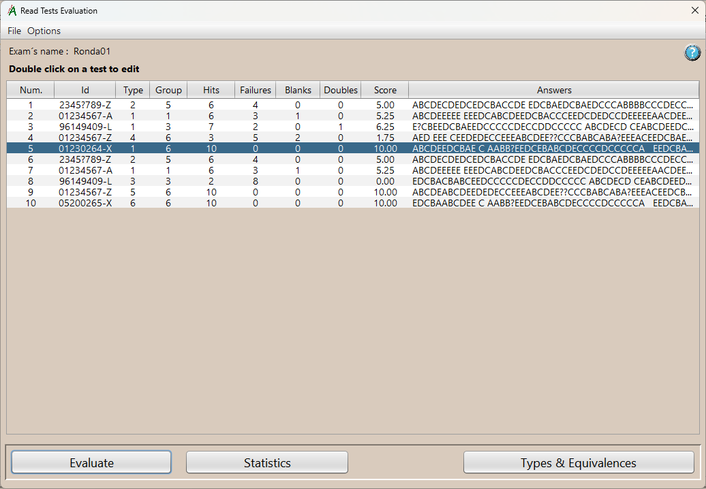
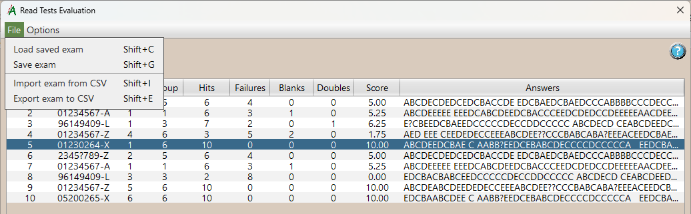
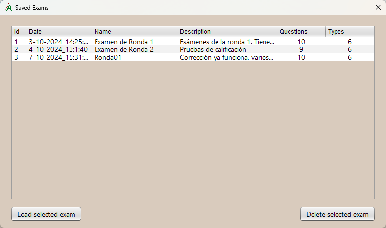
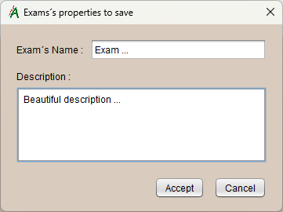
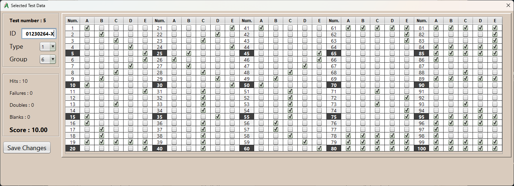
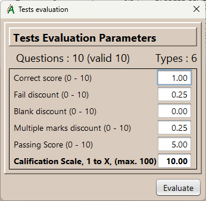

Read answer sheets evaluation.
In this window appears the tests you have read and interpreted in the main window. Here you can calculate the obtained scores by the students and get the complete results, you can also see the statistics elaborated from them.
Fields are:
- Num.
- I.d.
- Type
- Group
- Hits
- Failures
- Blanks
- Doubles
- Score
- Answers
Reading Order Number.
Student Identification code.
Test type. The types and equivalences table
indicates the correspondance with master type.
Important: If it is blank or invalid, this test cannot be evaluated.
Student group (optional).
The number of correct answers in the test questions.
Number of incorrect answers.
Number of blank answers in the test.
Number of questions that have two or more marks. These cannot be evaluated, although they can be penalized.
Grade obtained in the last calculation performed.
String of student responses to all questions. It will be the letter of the answer option marked. If it is blank, it is because he/she did not answer it and if it has the symbol “?” it is because there is more than one mark in that answer.
Menu Options:
There are two menu entries.
File
Several options are available. They each include a keyboard shortcut.
- Load previously saved exam:
Loads a complete, previously saved test from the application's internal database. It includes all the tests and the table of equivalences table. In the table you can see the exams contained in the database. You can select one and load it or you can also delete it, if you no longer need it.  - Save exam:
Saves the current exam to the database. It includes all the tests and the equivalence table. In the following form you must put the name and description to the exam you will save. - Import exam, from a “csv” file:
Imports the tests from a csv file as the actual exam. Does not include equivalency table. - Export exam, to a "csv" file:
Exports the tests of the current exam to a “csv” file. Does not include the equivalency table.
Important:
By double clicking on any test in the table, a form opens where you can see the test answers sheet in detail. All the fields are present. Some of them are editable, where we can correct the data that in the reading has not been interpreted correctly, as we can see in the following image: . correctly, as we see in the following image:
Additional action buttons
- Evaluate:
Process of calculating test scores. In the following form you can set the grading parameters. You also see the total number of questions to be used, up to 100, as well as those that are valid, since you can override questions. The number of types is also shown. These values are defined in the equivalence table.
- Points per hit:
Value assigned to each hit. Normally 1. - Failure discount:
Discount on the grade that will result from each failure. - Blank discount:
Discount in the grade that will result from each blank answer. - Multiple mark discount:
Discount in the grade that will result from each multiple or wrong marks. - Score Passed:
It is used to compile pass/fail statistics. - Rating scale:
The calculated score will be extrapolated to the defined range. Normally it is 1 to 10, but you can use any range between 1 and 100. between 1 and 100.
Score: After making the calculations, the scores will be updated in the test table..
- Points per hit:
- Statistics:
- Types and Equivalences